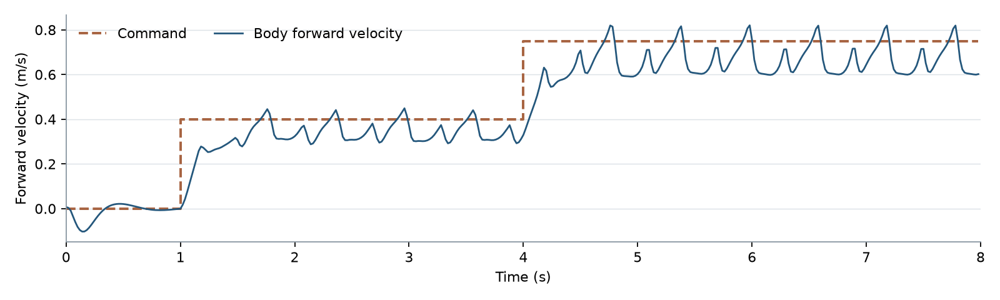

PPO / MuJoCo / Unitree Go2 & G1
机器人强化学习运动控制
基于 Unitree RL MjLab 训练三项仿真策略，从 Go2 的速度追踪与复杂地形运动，到 G1 的全身动作模仿。
- 训练工作
- 在每项任务中使用 4,096 个并行仿真环境训练 PPO，并从检查点录制策略回放。
- 策略输出
- Actor 输出关节位置偏移，底层 PD 追踪目标关节角。
- 运行频率
- 策略 50 Hz，MuJoCo 200 Hz。每次策略更新执行 4 个仿真步。
Go2 平地速度追踪
给定机身坐标系下的前进、横移和偏航速度指令，策略根据机器人状态调整各关节目标。

- 观测 速度指令、步态相位、机身角速度、重力投影、关节状态与上一动作。
- 奖励 追踪平面线速度与偏航角速度，配合步态、抬脚、滑移和动作平滑项。
Go2 复杂地形运动
任务仍是跟随速度指令。Actor 增加机身周围的射线高度扫描，根据前方高差调整关节目标。
- 地形输入 高度扫描覆盖机身周围 1.6 × 1.0 m，网格步距 0.10 m。平地策略省去这一输入。
- 课程学习 训练包含台阶、坡面和随机起伏。按行进表现调整地形难度，逐步增加落脚挑战。
G1 舞蹈动作跟踪
以 dance1_subject2 为参考。策略逐帧跟踪全身动作，同时维持平衡并处理接触。
- RSI 从采到的参考帧初始化机器人根部和关节状态，让策略在舞蹈中段也能开始跟踪。
- Adaptive sampling 按各时间段的终止失败频率提高采样概率，并保留均匀采样成分。
- 运动重定向 舞蹈训练从已匹配 G1 关节的参考轨迹开始。CSV 转 NPZ 用于时间重采样，并通过正运动学生成各身体部位的参考状态。
三项任务的训练设计
| 任务 | Actor 输入重点 | Critic 额外观测 | 奖励重点 |
|---|---|---|---|
| Go2 平地 | 速度指令、相位与本体状态 | 基座线速度、足端高度、腾空时间、接触与接触力 | 线速度与偏航跟踪、步态与足端稳定 |
| Go2 地形 | 平地输入＋地形高度扫描 | 基座线速度与足端接触等信息 | 速度跟踪与足端正则，配合地形课程 |
| G1 舞蹈 | 参考关节状态、相对朝向、本体状态 | 参考锚点相对位置、机身线速度与各身体部位位姿 | 根部与身体位姿、速度跟踪，约束关节限位和自碰撞 |
- 非对称 Actor–Critic 训练时给 Critic 更完整的仿真状态，估计回报。回放时由 Actor 按自身观测出动作。
- 位置目标与时间尺度 目标关节角等于默认关节角加动作偏移。Go2 的偏移缩放为 0.25，G1 按关节缩放。控制周期 20 ms，物理步长 5 ms。